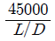
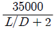
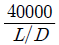
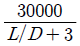

자기비파괴검사산업기사 (2016-03-06 기출문제)
1과목: 비파괴검사 개론
1. 자분탐상검사에서 시험체를 시험하기 전에 전처리를 해야 하는 중요한 목적이 아닌 것은?
- 검사액의 오염 방지
- 의사모양의 발생 차단
- 결함검출능력 저하 방지
- 누설자속 발생 저해 증가
(정답률: 13%)

2. 다음 중 초음파탐상시험에서 탐상결과의 신뢰성을 향상 시키기 위한 방법으로 적절하지 않은 것은?
- 장치의 성능 향상
- 주관적인 기술 확보
- 장치의 조정 정확성
- 탐촉자 주사방법의 정확성
(정답률: 13%)
3. 이원성 침투액에 대한 설명으로 틀린 것은?
- 검사에 사용되는 자외선은 파장이 100nm 이하이다.
- 자연광이나 암실의 자외선 하에서 검사할 수 있다.
- 상대적으로 일반 침투액에 비하여 색상이 떨어진다.
- 색상은 일반적으로 염색에는 적색이, 형광에는 형광오렌지색이 사용된다.
(정답률: 10%)
4. 비파괴시험의 실시 목적으로 옳은 것은?
- 비파괴시험은 재료나 부품, 구조물 등을 파괴하는 것도 포함하며, 결함이나 내부 구조 등을 조사하는 시험이다.
- 비파괴시험으로 결함을 검출하는 경우 결함의 합ㆍ부 기준을 명확히 하고, 적절한 시험방법과 시험조건을 선정하지 않으면 안된다.
- 비파괴시험의 주목적은 대량 생산의 향상에 있다.
- 비파괴시험에서 원리적인 차이는 검출 정도에 영향을 미치지 않으므로 어떤 방법을 이용할 것인가에 대해서는 검토하지 않아도 된다.
(정답률: 12%)
5. 누설검사의 원리와 가장 가까운 비파괴 검사법은?
- 자분탐상시험
- 방사선투과시험
- 침투탐상시험
- 초음파탐상시험
(정답률: 10%)
6. 취성에 대한 설명으로 틀린 것은?
- 적열취성 : S 는 적열취성을 방지한다.
- 뜨임취성: Mo 은 뜨임취성을 방지한다.
- 상온취성 : P을 함유한 강에서 나타난다.
- 청열취성: 탄소강에서 약 200 ∼ 300℃ 구역에서 발생한다.
(정답률: 9%)
7. 다음 소성가공 중 비절삭가공에 해당되는 것은?
- 선반가공
- 압연가공
- 밀링가공
- 드릴링가공
(정답률: 14%)
8. 비정질합금의 특성을 설명한 것 중 틀린 것은?
- 구조적으로 장거리의 규칙성이 없다.
- 불균질한 재료이고 결정이방성이 존재한다.
- 전기저항이 크고 그 온도의 의존성은 작다.
- 강도가 높고 연성도 크나 가공경화는 일으키지 않는다.
(정답률: 8%)
9. 다음 중 Naval brass에 대한 설명으로 옳은 것은?
- 7 : 3 황동에 주석을 첨가한 합금으로 증발기, 열교환기 등에 사용한다
- 95%Cu-5%Zn 합금으로 coining을 하기 쉬우므로 화폐, 메달 등에 사용한다.
- 80%Cu-20%Zn 합금으로 전연성이 좋고 색깔이 아름다워 장식용 등으로 사용한다.
- 6 : 4 황동에 주석을 첨가한 합금으로 판, 봉 등으로 가공되어 용접봉, 복수기판 등에 사용한다.
(정답률: 7%)
10. 다음 중 탄소 함유량이 가장 많은 것은?
- 순수철
- 암코철
- 공석강
- 공정주철
(정답률: 9%)
11. 알루미늄합금의 열처리에서 질별 기호 중 O 가 표시하는 것은?
- 어닐링한 것
- 가공 경화한 것
- 용체화 처리한 것
- 제조한 그대로의 것
(정답률: 6%)
12. 다음 제진재료나 제진합금에 대한 설명 중 틀린 것은?
- 제진성능은 외부 마찰에 기인한다.
- 제진합금은 감쇠능을 겸비하여야 한다.
- 대표적 합금으로는 Mg-Zr, Mn-Cu 등이 있다.
- 제진이란 진동발생원인 고체의 진동자를 감소시키는 것을 말한다.
(정답률: 11%)
13. 오스테나이트 구조를 가지고 있는 γ- Fe 의 격자구조는?
- HCP
- FCC
- BCC
- BCT
(정답률: 7%)
14. 스테인리스강에 대한 설명으로 옳은 것은?
- 마텐자이트계 스테인리스강은 18%Cr - 8%Ni이 대표적이다.
- 페라이트계 스테인리스강은 일반적으로 풀림 상태에서 내식성이 가장 나쁘다.
- 오스테나이트계 스테인리스강의 예민화를 방지하기 위해서 탄소함량을 높이는 것이 좋다.
- 오스테나이트계 스테인리스강의 강화는 열처리보다 냉간가공에 의한 것이 효과적이다.
(정답률: 5%)
15. 주철에 있어 흑연화 작용이 가장 큰 원소는?
- Ti
- Cr
- Ni
- Si
(정답률: 8%)
16. 용접작업에서 지그 사용 시 이점에 대한 설명 중 틀린 것은?
- 용접능률이 감소된다.
- 용접부의 신뢰성을 높인다.
- 제품의 정밀도를 높일 수 있다.
- 동일한 제품을 다량 생산할 수 있다.
(정답률: 13%)
17. 용접 용어 중 용접할 때 아크열에 의하여 용융된 모재부분이 오목 들어간 곳을 뜻하는 것은?
- 피닝
- 용융 풀
- 용입
- 용착부
(정답률: 11%)
18. 피복 아크 용접 시 아크전압이 30V, 아크전류가 150A, 용접속도가 10cm/min일 때 용접의 단위 길이 1cm당 발생하는 전기적 에너지 즉, 용접 입열량은 몇 J/cm 인가?
- 17000
- 27000
- 37000
- 47000
(정답률: 7%)
19. 용접사의 기량 미숙으로 인해 발생되는 결함과 가장 관계가 적은 것은?
- 오버랩
- 언더컷
- 라미네이션
- 슬래그 섞임
(정답률: 7%)
20. 피복 아크 용접용 기구에 해당되지 않는 것은?
- 접지 클램프
- 용접봉 홀더
- 케이블 커넥터
- 플래시 버트
(정답률: 9%)
2과목: 자기탐상검사 원리 및 규격
21. 프로드법으로 탐상할 때 프로드 간격으로 알맞은 것은?
- 8 ∼ 15인치
- 3 ∼ 8인치
- 2 ∼ 3인치
- 16 ∼ 32인치
(정답률: 97%)
22. 자력선(자기력선)의 성질로 틀린 것은?
- 자력선의 방향은 자기장의 방향과 평행하다.
- 자력선은 도중에 끊어지거나 서로 교차되지 않는다.
- 자력선의 밀도는 자기장의 세기와는 무관하다.
- 자력의 간격이 느슨할수록 자기장의 세기는 약하다.
(정답률: 96%)
23. 자분을 선택할 때 제일 먼저 고려해야 할 사항은?
- 검사표면과의 높은 색채대비
- 시험체와 투자율이 같은 것
- 검사표면에 대한 산화 영향
- 탈자시 높은 탈자 전류의 필요성
(정답률: 10%)
24. 자분탐상시험 후 일반적으로 탈자가 필요 없는 시험체는?
- 보자성이 높은 시험체
- 시험 후 자기변태점 이상으로 열처리를 실시하는 시험체
- 기계가공에 영향을 미치는 시험체
- 전회의 자화보다 낮은 자계가 적용되는 시험체
(정답률: 27%)
25. 자분탐상 후 규격, 시방서 등에 의해 불합격 되는 불연속부는?
- 건전부
- 의사지시
- 결함
- 자분누적
(정답률: 94%)
26. 자기저항에 대한 설명으로 옳은 것은?
- 자기회로의 단면적과 투자율과의 곱에 비례한다.
- 자기회로의 길이에 비례한다.
- 자기회로의 단면적과 길이의 곱에 비례한다.
- 자기회로의 투자율과 길이의 곱에 비례한다.
(정답률: 22%)
27. 자속을 나타내는 기호는?
- μ
- B
- Φ
- H
(정답률: 92%)
28. 길이 230mm(9인치), 외경 75mm(3인치)인 파이프(pipe) 형태의 철강제품을 코일법(coil)으로 검사할 때 코일의 권수를 10회로 한다면 필요한 자화전류는?
- 300A
- 900A
- 1500A
- 3000A
(정답률: 94%)
29. 자속밀도와 자계의 관계를 나타내는 식은? (단, B : 자속밀도, H : 자계의 세기, μ : 투자율, a : 전도율, ρ : 전하밀도 이다.)
- B = μ × H
- B = ρ × H
- B = (μ + H)/ρ
- B = a/(μ × H)
(정답률: 96%)
30. 자기이력곡선에서 폭이 좁을 때의 특성 중 옳은 것은?
- 영구자석의 특성이 있다.
- 낮은 전류자계의 특성을 갖는다.
- 높은 보자력의 특성을 갖는다.
- 높은 자기저항의 특성이 있다.
(정답률: 92%)
31. 철강 재료의 자분탐상 시험방법 및 자분모양의 분류(KS D0213)에서 자분의 적용시기에 따른 시험방법의 분류로 옳은 것은?
- 건식법, 습식법
- 연속법, 잔류법
- 직류, 맥류
- 직각통전법, 극간법
(정답률: 98%)
32. 철강 재료의 자분탐상 시험방법 및 자분모양의 분류(KS D0213)에 따라 탈자에 대한 설명으로 틀린 것은?
- 시험체의 얇은 부분 검사 후 두꺼운 부분을 연속 검사할 경우 탈자 한다.
- 시험체의 잔류자기가 이후의 기계가공에 악영향을 미칠 우려가 있을 경우 탈자 한다.
- 시험체의 잔류자기가 계측장치 등에 악영향을 미칠 우려가 있을 경우 탈자 한다.
- 시험체가 철분 등을 흡인하여 마모를 증가시킬 우려가 있는 경우 탈자 한다.
(정답률: 97%)
33. 철강 재료의 자분탐상 시험방법 및 자분모양의 분류(KS D0213)에서 단조품이나 압연품에 나타나는 메탈 플로우 부에 발생되는 유사지시는 어떻게 확인하는가?
- 시험면을 매끄럽게 한 후 재시험한다.
- 잔류법으로 재시험한다.
- 탈자 후 재시험한다.
- 매크로, 현미경 시험 등으로 확인한다.
(정답률: 95%)
34. 보일러 및 압력용기에 대한 자분탐상검사(ASME Sec.VArt.7)에서 선형자화법에 의한 탐상시 검사체의 길이(L)가 직경(D)의 4.5배 일 때 암페어-턴수를 구하는 식은?




(정답률: 94%)
35. 철강 재료의 자분탐상 시험방법 및 자분모양의 분류(KS D0213)에 의해 탐상결과로 얻은 자분모양을 모양 및 집중성에 따라 분류한 것이 아닌 것은?
- 연속한 자분모양
- 독립한 자분모양
- 균열에 의한 자분모양
- 군집한 자분모양
(정답률: 97%)
36. 보일러 및 압력용기에 대한 자분탐상검사(ASME Sec.V Art.7)에 따라 케토스 링을 사용하여 장비의 성능을 점검할 때 틀린 것은?
- 자화전류는 교류를 사용한다.
- 자화는 중심도체법으로 원형자화 시킨다.
- 자분은 습식, 건식, 형광 어느 것으로도 할 수 있다.
- 표면에 지시가 형성된 홀(hole) 개수에 따라 그 성능을 점검한다.
(정답률: 5%)
37. 보일러 및 압력용기에 대한 표준자분탐상검사(ASME Sec.V Art.25 SE-709)에 의한 탐상결과 나타난 자분모양이 불연속의 원인으로 누설자속에 의하여 형성된 관련지시의 합ㆍ부 판정을 할 경우의 판정기준으로 옳은 것은?
- 검사자의 판정기준에 따른다.
- 불연속부로 판정된 것은 모두 합격 처리한다.
- 불연속부로 판정된 것은 모두 불합격 처리한다.
- 제조자 및 구매자사이에 합의된 판정기준에 따른다.
(정답률: 94%)
38. 보일러 및 압력용기의 자분탐상검사(ASME Sec.V Art.7)규격에 따라 코일법으로 시험하려 한다. 코일의 권선수가 10, 시험체의 직경이 3인치, 길이가 9인치일 때 전류는 얼마로 해야 하는가?
- 150[A]
- 450[A]
- 1500[A]
- 4500[A]
(정답률: 95%)
39. 철강 재료의 자분탐상 시험방법 및 자분모양의 분류(KS D0213)에서 시험체 자화 방법으로 틀린 것은?
- 자계의 방향을 시험면에 가능한 평행으로 한다.
- 자계의 방향을 예측되는 흠의 방향에 가능한 평행으로 한다.
- 반자계를 적게 한다.
- 시험편을 태워서는 안 될 경우는 시험체에 직접 통전하지 않은 방법이 좋다.
(정답률: 95%)
40. 철강 재료의 자분탐상 시험방법 및 자분모양의 분류(KS D0213)에 규정된 대비시험편 중 자화할 때 자계의 방향 및 강도를 확인하는 것으로 틀린 것은?
- A1 표준시험편
- B 형 대비시험편
- C 형 표준시험편
- A2 표준시험편
(정답률: 96%)
3과목: 자기탐상검사
41. 자분탐상검사 시 자분을 선택할 때 자분의 재질로 가장 부적당한 것은?
- 투자율이 높은 재질
- 보자성이 높은 재질
- 가시성이 높은 재질
- 자극에 대한 흡착 성능이 높은 재질
(정답률: 12%)
42. 시험체 표면이나 일부분에 손상을 줄 수 있는 자화방법으로만 나열된 것은?
- 극간법, 프로드법, 전류관통법
- 축통전법, 직각통전법, 프로드법
- 극간법, 전류관통법, 코일법
- 축통전법, 코일법, 자속관통법
(정답률: 51%)
43. 자분탐상검사의 자화조작 단계에 해당하지 않는 것은?
- 통전시간의 결정
- 자화방법의 선정
- 전처리방법의 선정
- 자화전류의 종류와 전류 값의 선정
(정답률: 12%)
44. 25mm(1인치) 두께의 철판을 프로드(prod)법으로 자분탐상검사를 수행할 경우 프로드의 간격이 150mm(약 6인치) 라면 어느 정도의 전류치가 적절한가?
- 200 Ampere
- 400 Ampere
- 600 Ampere
- 900 Ampere
(정답률: 6%)
45. 자분탐상시험 시 프로드(prod)를 사용할 때 접촉 부위에 아크를 방지하기 위하여 전류를 어떻게 통전시켜야 하는가?
- 접촉하기 전 통전시킨 후, 떼기 전에 전류를 끊음
- 접촉시킨 후 통전시키고, 떼기 전에 전류를 끊음
- 전류를 통전시킨 상태에서 접촉시키고 뗀다.
- 접촉시킨 후 통전시키고, 그대로 뗀 후 전류를 끊음
(정답률: 11%)
46. 원향자화 된 대형 시험품을 탈자하는 방법으로 다음 중 가장 효과적인 내용은?
- 시험물을 교류 전류가 흐르는 코일에 통과시킨다.
- 전류치가 감소하면서 방향이 역전하는 직류전류를 시험품에 직접 통과시킨다.
- 전류치가 감소하는 교류 전류를 시험품에 직접 통과시킨다.
- 전류치가 감소하는 교류 전류가 흐르는 코일내에 시험품을 둔다.
(정답률: 8%)
47. 자분탐상검사에서 검사방법 적용 시 고려해야할 사항이 아닌 것은?
- 제품의 성능
- 예상결함의 종류
- 잔류자기의 양
- 검사품의 표면조건
(정답률: 6%)
48. 봉형 자성체의 외경이 7인치일 때 자화에 필요한 자화전류는?
- 1000A
- 1500A
- 2000A
- 2500A
(정답률: 3%)
49. 누설자속의 세기에 대한 설명이 잘못된 것은?
- 표면하의 균열은 누설자속이 강하며 자분의 부착이 쉽다.
- 표면의 균열은 누설자속이 강하며 자분의 부착이 쉽다.
- 표면하의 균열은 그 깊이에 따라 누설자속의 강도가 다르다.
- 표면의 균열은 적용되는 자장의 방향에 따라 누설자속의 강도가 다르다.
(정답률: 23%)
50. 자분탐상시험에서 분산매의 특성이 아닌 것은?
- 장기간 변질이 없고 시험체에 해가 없을 것
- 점도가 낮고 적심성이 적절할 것
- 휘발성이 크고 인체에 유해하지 않을 것
- 인화점이 높고 장기간 변질이 없을 것
(정답률: 12%)
51. 극간법에 의한 자분탐상시험에 대한 설명 중 옳은 것은?
- 대상이 되는 시험체는 비자성체이다.
- 자석의 자극간격이 클수록 자속밀도를 크게 한다.
- 교류자석을 이용하는 경우는 표면 아래에 숨어 있는 결함의 검출이 쉽다.
- 시험 면에 접촉한 자극의 주위에는 결함이 있어도 자분모양이 형성되지 않는 영역인 불감대가 존재한다.
(정답률: 51%)
52. 사용 중에 있는 시험품의 결함을 자분탐상시험으로 찾아낼 수 있는 것은?
- Shrinkage
- Hot tear
- Burst
- Fatigue crack
(정답률: 51%)
53. 간이형 자기검출기(field indicator)의 역할이 아닌 것은?
- 누설자계의 위치를 확인한다.
- 부품의 탈자 여부를 확인한다.
- 부품의 내, 외부 자기장 세기를 비교한다.
- 사용된 자화전류 값을 측정한다.
(정답률: 9%)
54. 18[Oe]에서 자분모양이 나타나는 A형 표준시험편을 사용하여 자장의 강도가 36[Oe]가 되는 전류 값을 구하기 위해 A형표준시험편을 시험체에 놓고 서서히 증가시켜 500[A]에서 자분모양이 나타났다면 다음 중 결정될 자화전류 값[A]은?
- 250
- 500
- 750
- 1000
(정답률: 8%)
55. 용접부에 발생하는 결함으로서 고장력강 용접부의 잔류응력을 제거할 목적으로 용접 후 열처리를 할 때 발생하는 균열은?
- 힐(heel) 균열
- 루트 균열
- 재열 균열
- 변형 균열
(정답률: 9%)
56. 자분탐상시험에서 잔류법으로 검사하기가 어려운 부품은?
- 높은 보자성을 갖는 부품
- 낮은 보자성을 갖는 부품
- 항자력이 큰 부품
- 낮은 투자율을 갖는 부품
(정답률: 50%)
57. 고장력 강판의 미세한 연마균열을 검출하는데 적합하지 않은 자분은?
- 흑색자분
- 백색자분
- 적색자분
- 형광자분
(정답률: 23%)
58. 용접 구조물을 잔류법으로 탐상하려고 한다. 알맞은 조건은?
- 낮은 투자율, 높은 보자성
- 낮은 보자성, 높은 투자율
- 낮은 투자율, 낮은 보자성
- 낮은 잔류자기, 높은 보자성
(정답률: 49%)
59. 단조품 표면에 존재하는 결함을 검출하는데 효과적인 자화전류는?
- 교류
- 충격류
- 반파직류
- 직류
(정답률: 12%)
60. 자분탐상시험을 적용함에 있어서 보수검사에 대한 설명 중 틀린 것은?
- 제조시 결함종류의 변화만 검사 한다.
- 통상 주기적 검사를 한다.
- 소구경 관 내면의 검사 등에 대해서는 초음파 탐상시험이 자기탐상시험의 대체 시험으로써 사용된다.
- 접근 가능한 대구경 관이면 내표면의 검사를 자분탐상시험으로 행한다.
(정답률: 11%)